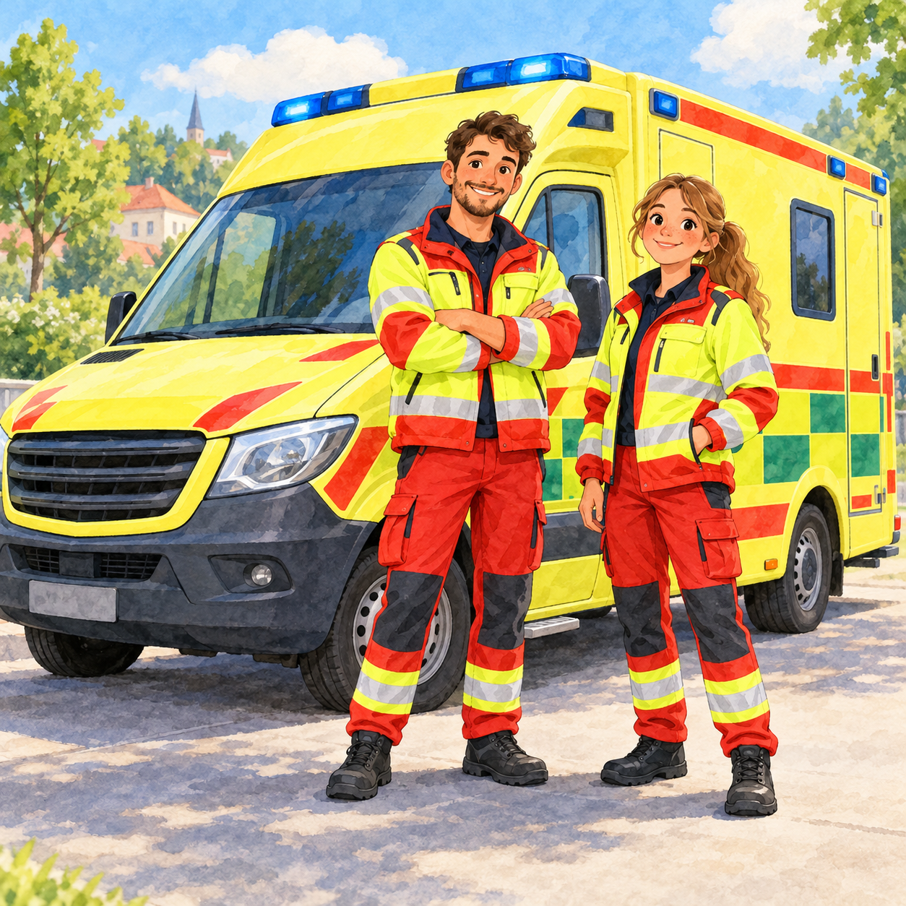
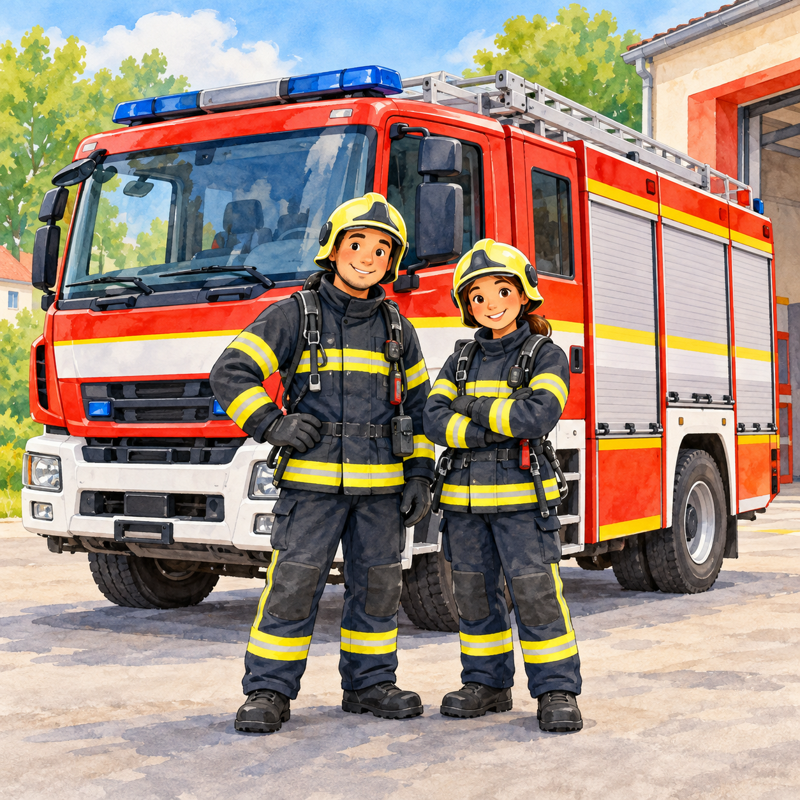
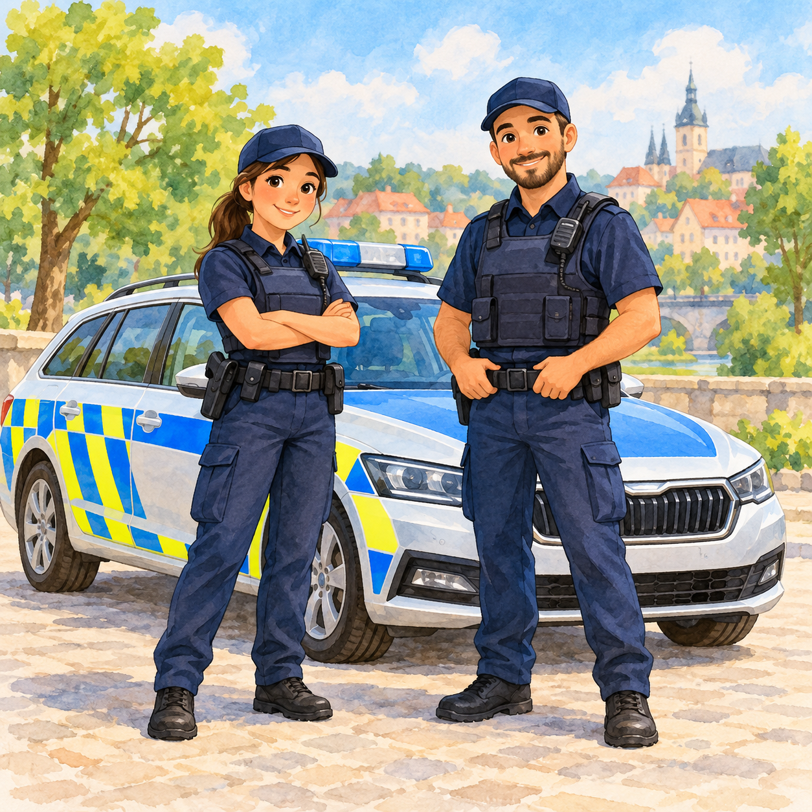

Pro 2.–3. ročník: koho volat, co udělat při úrazu a jak se starat o zdraví.



Když voláš o pomoc, řekni co se stalo, kde jsi a jak se jmenuješ. Nikdy nezavěšuj první – počkej, až to řekne operátor.